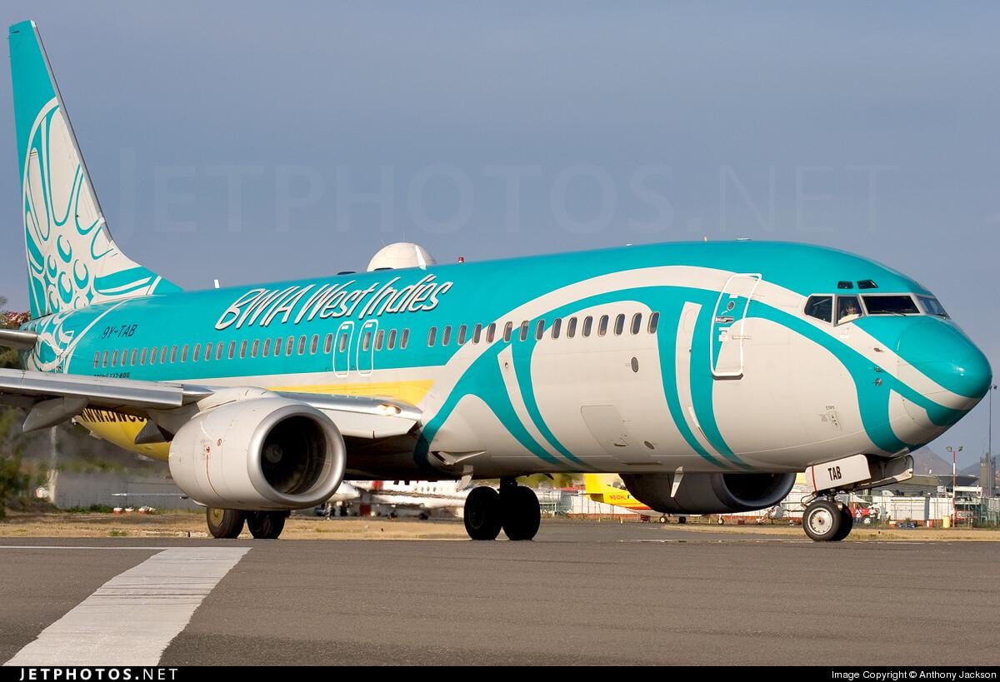

What are your guys thoughts on BWIA West Indies Airways when it was in service?
Posted by u/Pretty_Aside_7674 · 15 days ago
8 upvotes · 13 comments

u/ma70_15d ago
7 upvotes
I loved their last livery. And the nickname Bwee
u/Infamous_Copy_365915d ago
6 upvotes
I always knew that I was on the way home when I boarded and ordered a Solo Apple J. They also had red Solo if I recall correctly. And they made good spicy bloody marys.
u/Carribeantimberwolf15d ago
3 upvotes
The brown stew chicken sandwich was clutch
u/Kelvin6215d ago
11 upvotes
But Will It Arrive?
u/ProfessionSoft794415d ago
4 upvotes
Better Walk If Able
u/Infamous_Copy_365915d ago
2 upvotes
I remember this one
u/disgruntledmarmoset15d ago
2 upvotes
Sounds like Bahamasair lol
u/Lazy-Community-128815d ago
2 upvotes
Bound to wait in airport
u/GUYman29915d ago
5 upvotes
The service was always fine but I remember that, even at 8, finding it weird that the national airline was called BRITISH West Indian Airways. To be honest I found no significant change in actual service when it became Caribbean Airlines but I thought the name was more appropriate.
u/StrategyFlashy452614d ago
5 upvotes
It was part of British Overseas Airways Corporation and was probably a well established trade name by the time it was sold to the Trinidad Gov. Changing trade name could lead to loss of business.
u/Pure_Toe351314d ago
6 upvotes
Exactly, quite appropriate for the time of founding. In fact, the legacy is not completely dead as the codes BW and BWA are still used.
u/Knight-Man15d ago
4 upvotes
This commercial was the last one I remember before it ceased operations in 2006 and it has lived rent free in my mind for 20 years now. It used to air during the evening news.
u/[deleted]14d ago
1 upvotes
I loved it, but I knew there was always going to be a delay!
I loved their last livery. And the nickname Bwee
I always knew that I was on the way home when I boarded and ordered a Solo Apple J. They also had red Solo if I recall correctly. And they made good spicy bloody marys.
The brown stew chicken sandwich was clutch
But Will It Arrive?
Better Walk If Able
I remember this one
Sounds like Bahamasair lol
Bound to wait in airport
The service was always fine but I remember that, even at 8, finding it weird that the national airline was called BRITISH West Indian Airways. To be honest I found no significant change in actual service when it became Caribbean Airlines but I thought the name was more appropriate.
It was part of British Overseas Airways Corporation and was probably a well established trade name by the time it was sold to the Trinidad Gov. Changing trade name could lead to loss of business.
Exactly, quite appropriate for the time of founding. In fact, the legacy is not completely dead as the codes BW and BWA are still used.
This commercial was the last one I remember before it ceased operations in 2006 and it has lived rent free in my mind for 20 years now. It used to air during the evening news.
I loved it, but I knew there was always going to be a delay!